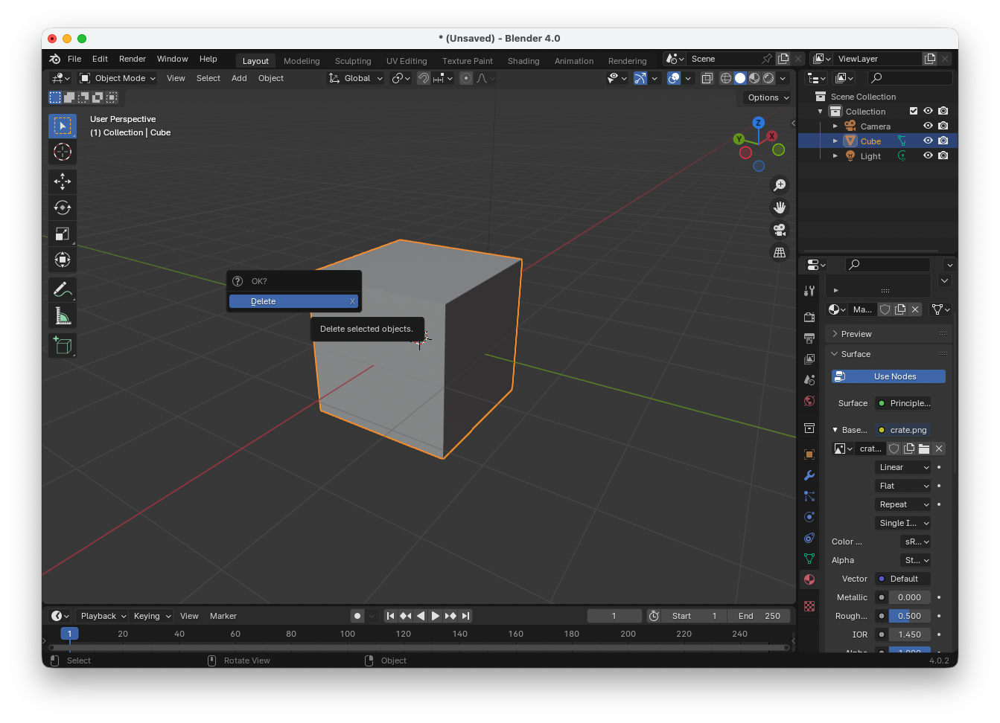
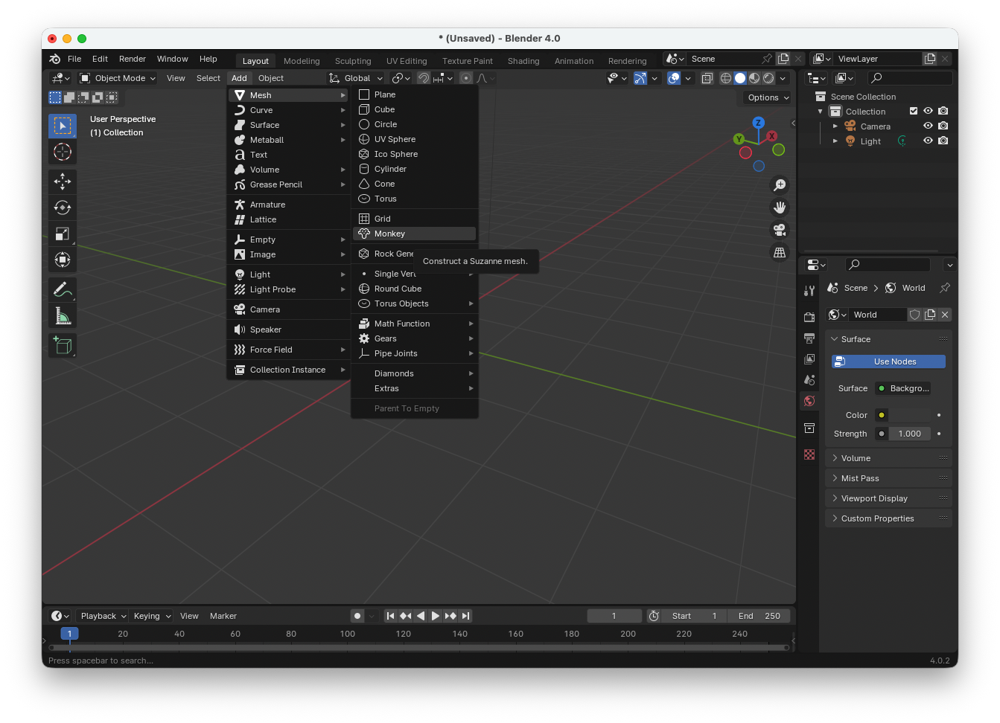
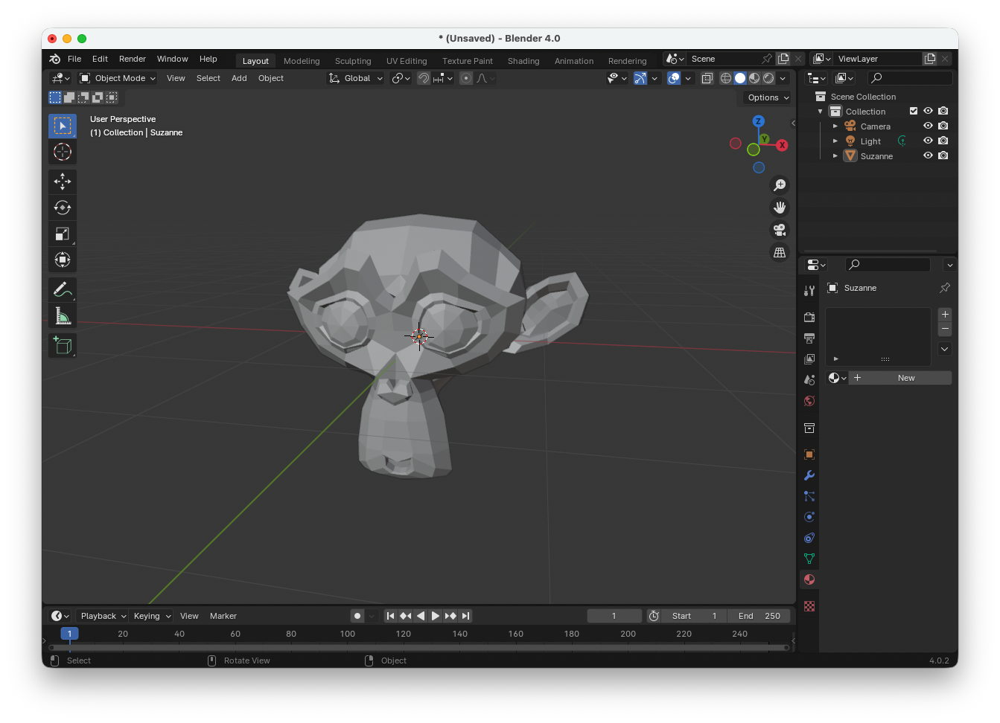
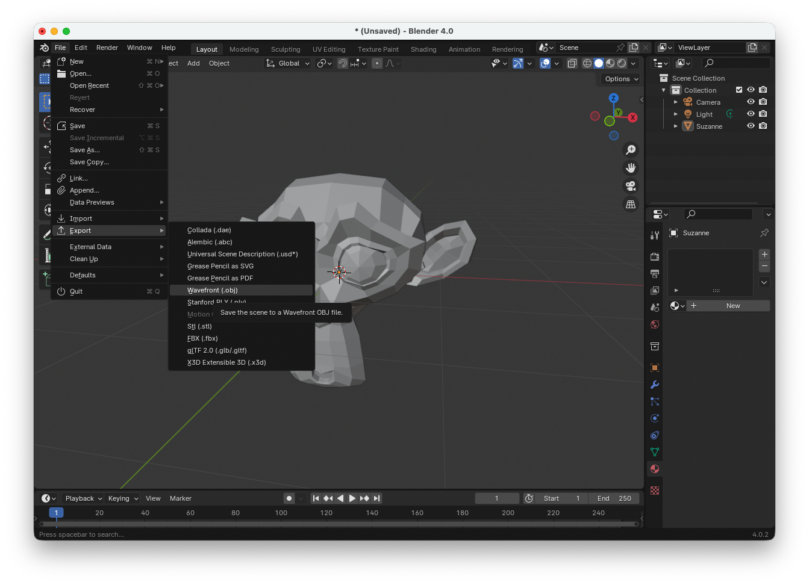
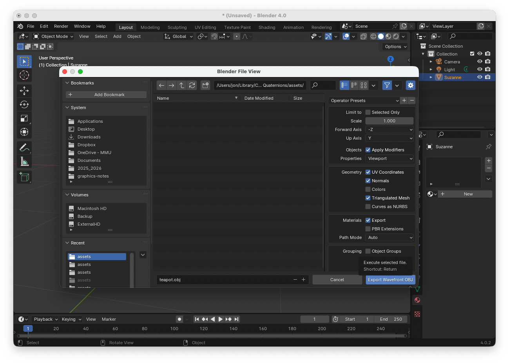

Importing 3D Models#
In these notes we defined our objects, namely the unit cube and simple planar objects, by “hard coding” the vertex coordinates in JavaScript. In practice, 3D models are created using specialised modelling software such as Blender. One of the most common formats used to exchange 3D models is the Wavefront OBJ format. OBJ files store the geometric data required to describe a 3D object, including vertex positions, texture coordinates, normals, and face definitions. They are typically accompanied by a material file (.mtl) that defines surface properties such as colours and textures. Here we look at how 3D models can be exported from Blender and imported into our WebGL application using the OBJ format. This allows complex models to be rendered in a scene without having to manually define every vertex in code.
Wavefront (OBJ) Files#
Wavefront files are a simple and widely used format for storing 3D geometry. They were originally development by Wavefront Technologies and are commonly used to exchange models between 3D modelling software such as Blender, Maya etc. and graphics applications. The most common Wavefront format is the .obj file, which stores the geometry of a model using plain text making it easy to read and parse into JavaScript.
An OBJ file describes a 3D model using several types of entries. Each line begins with a keyword that specifies the type of data that follows.
v– vertex position \((x, y, z)\)vt– texture coordinate \((u, v)\)vn– vertex normal \((n_x, n_y, n_z)\)f– faceo– object nameusemtl– material to use
For example, the OBJ file for a simple unit cube may look like
o Cube
v -1.000000 -1.000000 1.000000
v -1.000000 1.000000 1.000000
v -1.000000 -1.000000 -1.000000
v -1.000000 1.000000 -1.000000
v 1.000000 -1.000000 1.000000
v 1.000000 1.000000 1.000000
v 1.000000 -1.000000 -1.000000
v 1.000000 1.000000 -1.000000
vn -1.0000 -0.0000 -0.0000
vn -0.0000 -0.0000 -1.0000
vn 1.0000 -0.0000 -0.0000
vn -0.0000 -0.0000 1.0000
vn -0.0000 -1.0000 -0.0000
vn -0.0000 1.0000 -0.0000
vt 1.000000 0.000000
vt 0.000000 1.000000
vt 0.000000 0.000000
vt 1.000000 1.000000
usemtl crate
f 2/1/1 3/2/1 1/3/1
f 4/1/2 7/2/2 3/3/2
f 8/1/3 5/2/3 7/3/3
f 6/1/4 1/2/4 5/3/4
f 7/1/5 1/2/5 3/3/5
f 4/1/6 6/2/6 8/3/6
f 2/1/1 4/4/1 3/2/1
f 4/1/2 8/4/2 7/2/2
f 8/1/3 6/4/3 5/2/3
f 6/1/4 2/4/4 1/2/4
f 7/1/5 5/4/5 1/2/5
f 4/1/6 2/4/6 6/2/6
The face of a model indexes the vertex coordinates, texture coordinates and normal vectors
f vertexIndex/textureIndex/normalIndex
For the cube example, each face has three sets of indices so these are all triangles. The first vertex of the first triangle is 2/1/1 so
vertex coordinate is \((-1, 1, 1)\)
texture coordinate is \((1, 0)\)
normal vector is \((-1, 0, 0)\)
The second vertex of the first triangle is 3/2/1 so
vertex coordinate is \((-1, -1, -1)\)
texture coordinate is \((0, 1)\)
normal vector is \((-1, 0, 0)\)
and so on.
Loading models from OBJ files#
To load a model from an OBJ file so that it can be used with the WebGL programs we have written in these labs we need a function that reads in the data from the OBJ file and writes the vertex coordinates, texture coordinates, normal vectors and vertex indices into the vertices and indices arrays.
async function loadOBJ(path) {
const response = await fetch(path);
const text = await response.text();
const tempPos = [];
const tempUV = [];
const tempNorm = [];
const vertices = [];
const indices = [];
let index = 0;
const lines = text.split("\n");
for (let line of lines) {
line = line.trim();
if (line === "" || line.startsWith("#")) continue;
const parts = line.split(/\s+/);
switch (parts[0]) {
// vertex position
case "v":
tempPos.push([
parseFloat(parts[1]),
parseFloat(parts[2]),
parseFloat(parts[3])
]);
break;
// texture coordinate
case "vt":
tempUV.push([
parseFloat(parts[1]),
parseFloat(parts[2])
]);
break;
// normal
case "vn":
tempNorm.push([
parseFloat(parts[1]),
parseFloat(parts[2]),
parseFloat(parts[3])
]);
break;
// face
case "f":
const face = parts.slice(1);
// triangulate polygon
for (let i = 1; i < face.length - 1; i++) {
const triangle = [face[0], face[i], face[i+1]];
for (let vertex of triangle) {
const vals = vertex.split("/");
const v = tempPos[vals[0]-1];
const uv = vals[1] ? tempUV[vals[1]-1] : [0,0];
const n = vals[2] ? tempNorm[vals[2]-1] : [0,0,0];
vertices.push(
v[0], v[1], v[2], // position
1, 1, 1, // colour
uv[0], uv[1], // texture
n[0], n[1], n[2] // normal
);
indices.push(index++);
}
}
break;
}
}
return {
vertices: new Float32Array(vertices),
indices: new Uint16Array(indices)
};
}
This function is an example of an asynchronous function which is proceeded by the async keyword. An asynchronous function returns a promise which is a value that may not be available yet but will be resolved (or rejected) in the future. Promises are a way to hand asynchronous operations like fetching data and reading files. These allow us to use the await keyword to pause executing of the program until the promise is resolved. To use the loadObj() function we need to change the main() function to an asynchronous function and use the await keyword when calling it.
async function main() {
// blah blah
// Load model
const model = await loadOBJ("assets/teapot.obj");
// Create VAO
const modelVao = createVao(gl, program, model.vertices, model.indices);
// more blah blah
}
main()
Creating OBJ files using Blender#
Blender is a free, open source 3D creation suite used for creating 3D content. It is widely used in computer graphics, animation, games and movies (the movie Flow won the Best Animated Feature Oscar in 2025 was made using Blender). Blender can be used to create a 3D model, or import one from a variety of file formats, and export the OBJ file.
For example, to create an OBJ file of Suzanne, the blender mascot do the following
Open Blender (this is installed on PCs in the Dalton building or can be downloaded from https://www.blender.org/)
{kind=link}

When Blender loads the default model is a unit cube. Delete this by clicking on the cube, press the X key and select Delete
{kind=link}

Click on Add > Mesh > Monkey
{kind=link}

Click on File > Export > Wavefront (.obj)
{kind=link}

Select the Triangulated Mesh, Normals and UV Coordinates options, navigate to where you want to save the OBJ file (e.g., your assets/ folder) and then click on Export Wavefront OBJ
{kind=link}

Note
Blender is a powerful 3D creation tool, and here we only cover a very small part of its capabilities. It includes many features for creating 3D models and textures that are beyond the scope of these notes. If you want to learn more about creating models and applying textures, there are many tutorials available online. In particular, YouTube and other websites provide clear, step-by-step guides that can help you create and edit 3D models.